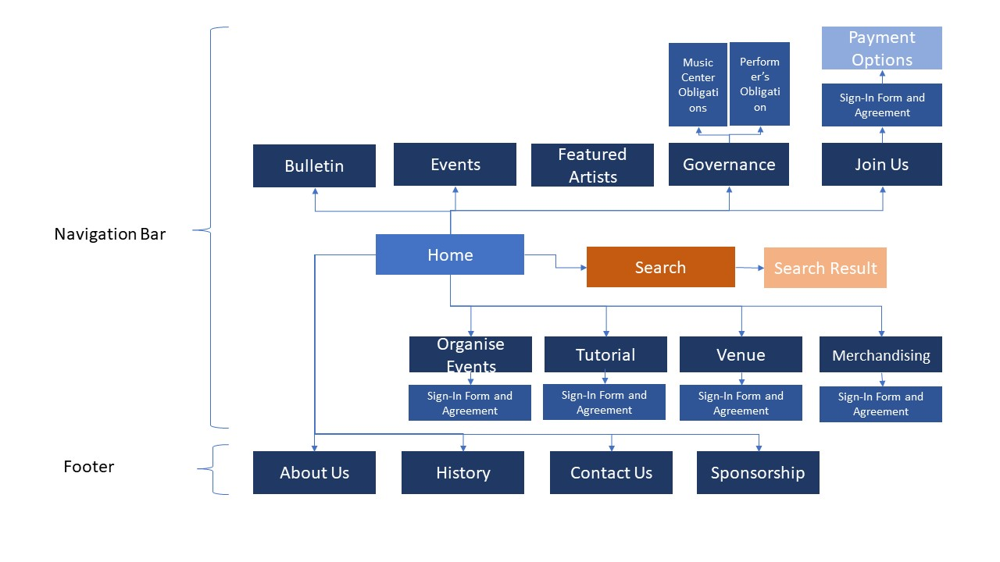
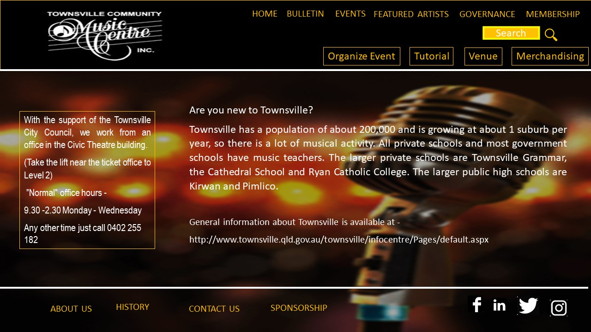
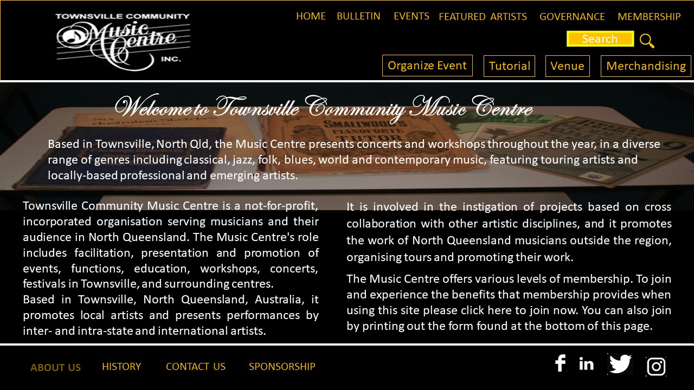

CP5638 - Assignment 2 - Project Plan - Townsville Community Music Centre
Name: Ashmita Kumari Rungta, JC500855
Log-In:
Name: Rochelle Sanchez Nisay, JC500697
Log-In:
Goals
The site is needed to encourage more individuals and even families to sign-up for membership and embolden voluntarism.
Also, to increase awareness of the services that TCMC offers. Thus, artist and even ordinary individuals will enlist to use the services and facilities of the centre.
Success Evaluation
Within two months after website deployment, Townsville Community Music Centre aims to:
- Increase membership by at least fifty individuals;
- After the sign-up, at least 70 per cent of the new members must enrol to be part of the voluntarism program in administration work, concert organisation; and promotion of concerts in various media platforms;
- Use website as platform for promotion for future in-house produced events resulting to an increase of ticket sales by 25 per cent;
- Increase awareness for artist to book concert organisation by 25 per cent from the current average monthly total of one to a minimum of two, maximum of three;
Target Audience
- Individuals between 18 to 40 years old - for the purpose of increasing membership
- The design will have a vibrant colors to appeal to the youth; and will have a multi-level navigation bars for easy access:
- General Information – Home, Bulletin, Events, Featured Artists, Governance, Membership
- Search Bar
- Services Bar – Organise Event, Tutorials, Venue, Merchandising
- Footer – AboutUs, History, ContactUs, Sponsorship Information
- Local/International Tenured and Upcoming Artists or simple individuals - for the purpose of availing services offered
- Services Bar was intentionally separated for artists or ordinary individuals who want to avail of the Organize Event on their behalf.
- Aside from having a vibrant colors, we try to be consistent in color palette and imagery are well selected;
- Adhere to simplicity for easy navigation and not too much page layers;
- Consistency in font choices, sizes, colors and use button styles in design styles and elements;
- Double check the content for typographical and grammar errors
- Responsive screens will be utilized to cater for small screens like mobile phones
- Getting across the information is the purpose of website. Content should be concise and make use of bullet points instead of the kilometric sentences, make good use of the headlines and subheadlines.
Content
- Home – the landing page. The content may change depending on the season and featured events
- Bulletin – is an announcement page for need of volunteer, job openings, and other announcements
- Events – Upcoming and featured events produced by TCMC
- Featured Artists – a short narration of artist beginnings, accomplishments, and contact details
- Governance – Rules and Obligations from Parties to Follow
- Music Centre’s Obligation – set of rules by the Music Centre that must be fulfilled for all services offered
- Performer’s Obligation – set of rules by the required by the Music Centre that Performer’s must obliged to
- Membership – An invitation to become a member
- Sign-In Form and Agreement – member’s information and rules members must agree upon
- Payment Option – Online Payment or Offline Payment choices
- Search – A search tool to help user find needed data
- Search Result – When search tool is used, a search result page will follow that may or may not contain a link the user is looking for
- Organise Events – A page that will give the user options to click a button for services needed in organizing an event. Includes venue, promotion and other services; and schedulin
- Agreement Form – To ensure that the individual securing the services of the Centre will abide by the rules set in the agreement form
- Tutorials – Open to members and non-members. User will tick button/s he would like to enrol into. Includes type of tutorial, scheduling and fee information
- Sign-In Form and Agreement – User to provide personal details and must Agree to the rules set by the Centre
- Venue Needs – Type of venue needed and scheduling. Includes type of venue needed, date and time
- Agreement Form – To ensure that the individual securing the services of the Centre will abide by the rules set in the agreement form
- Merchandising – The Centre offers a number of customised or generic merchandising materials. Include type of premium products, quantity and delivery date.
- Agreement Form – To ensure that the individual securing the services of the Centre will abide by the rules set in the agreement form
- About Us – tells about the organisation and humble beginnings
- History – Tells the milestone of the Centre from 30years back
- Contact Us – Contains address, Location map, contact numbers, email address
- Sponsorship – Information on how the Centre is being funded
Site Flowchart (Structure Diagram)

GitHub Repository
Enter your repo name and link it here
Design Comps and Developed Pages

